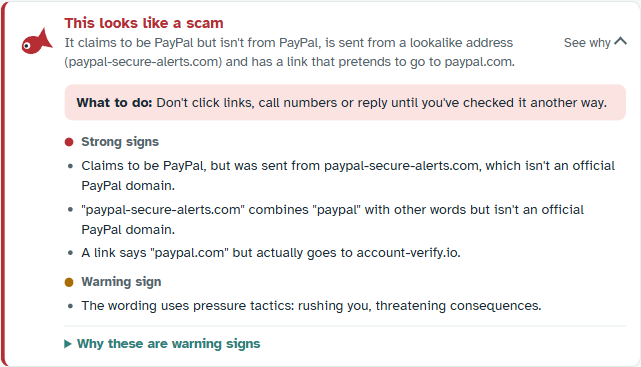

A red herring is a misleading clue. So is every scam.
Red Herring is a browser extension for Chrome. It reads the email or web page in front of you, notices the tricks scammers use, and tells you in plain words what's off. You still decide what to do.

Installing Red Herring
- Open Red Herring's page on the Chrome Web Store and choose Add to Chrome. If your organization installs it for you, it's already there.
- Click the puzzle-piece icon in Chrome's toolbar and pin Red Herring, so the red fish is always visible.
- Refresh any Gmail tabs you already had open.
That's all. There's no account and nothing to set up. A "How Red Herring works" page opens once to introduce it.
Red Herring works in Google Chrome and Microsoft Edge on a computer, with Gmail on the web.
Notes on your emails
When you open an email in Gmail, Red Herring checks it on your computer and adds a short note above it. The first line says what's wrong, and red notes open straight away. On amber notes, choose See why to open it.

- Red: this looks like a scam. Don't click links, call numbers, reply or pay until you've checked another way.
- Amber: be careful with this one. Something is unusual. Read the reasons before you act.
- Grey: no specific warning signs. That's not the same as safe. Stay wary of anything asking for money, passwords or urgency.
Inside the note, signs are grouped as strong, warning and minor, and Why these are warning signs explains each one, so you learn to spot the trick yourself next time.
Every note also has a line of plain facts about the sender, even when there's nothing to warn about: whether Gmail verified who sent it, whether they've emailed you before, and where replies would go.
Show me in the email
Choose Show me in the email to highlight the warning signs inside the email itself: the pushy phrase, the disguised link, the odd sender. Red notes highlight them for you. Point at a highlighted link to see where it really goes.
Marks in your inbox
Risky emails get a small red or amber fish next to them in your inbox list, so you're warned before you even open one. This is judged from the sender, subject and the short preview Gmail shows, so open the email for the full story. Point at the fish to see why. You can turn the marks off in Settings.
What it looks for
- Senders pretending to be a company, a colleague or your own organization, including lookalike addresses such as
rnicrosoft.com. - Emails that fail Gmail's own checks of who really sent them, or whose replies go somewhere else.
- Links that show one address but go to another, and links to places scammers like to hide pages.
- Pressure: urgency, threats, requests for payment, passwords, security codes or gift cards, and "call this number" scams.
- Scams that ride on real relationships: a supplier "changing bank details", a lookalike sender slipping into an existing conversation, and "I've shared a document with you" from someone who has never emailed you.
- Risky attachments, QR codes leading to fake sign-in pages, and tricks for slipping past spam filters.
"I know this sender"
If a note warns about someone you genuinely know, open it and choose I know this sender, then confirm. Their emails stay quiet from then on, except if they ever fail Gmail's sender checks, which would mean someone is pretending to be them. You can undo this in Settings under People you know.
Copy details
Every note has a Copy details button. It copies a short summary (the verdict, the domains involved and the reasons, but not the email itself) so you can report a scam Red Herring missed, or a false alarm.
One thing to remember
No warning doesn't mean safe. If any message pressures you to pay, sign in or act fast, check with the sender another way: call a number you already know, or type the company's website yourself.
Warnings on websites
Red Herring also watches for the moments a scam website asks you to do something risky:
- Fake sign-in pages dressed up as Microsoft, Google, your bank or your own organization, warned about before you type a password.
- "Paste this to prove you're not a robot" pages that copy a harmful command and ask you to run it.
- "Your computer is infected, call this number" pages.
- App permission screens, explained in plain words: who is asking, and for what.
- Any page you opened from a suspicious email.
Red warnings appear at the top of the page; amber ones in the corner. Close one with its ×, Dismiss or Esc. A dismissed warning stays dismissed on that page.
A scam page could try to hide the warning about itself, so Red Herring also marks the toolbar fish with a red ! for that tab, and shows a desktop notification for red warnings. If a page tries to hide its warning, you'll be told that too.
Pages it stays out of
Pages on your own computer or local network, such as the settings page of a router, printer, camera or other device, are left completely alone. Scam pages live on the internet, and device pages can be fragile, so Red Herring doesn't touch them.
Dangerous downloads
Some files are dangerous before they're even opened. When a download looks dangerous, for example a program pretending to be a PDF, Red Herring pauses it before it's saved and asks:
- Delete the download: the safe choice unless you were expecting exactly this file.
- Keep it anyway: the download carries on.
The question appears on the page, in a notification and in the toolbar fish. If you use a download manager and this gets in its way, turn off Hold dangerous downloads in Settings; you'll still be warned.
Checking a text or link
Got a suspicious text message on your phone, or a link someone sent you? Click the toolbar fish, choose Check a message, paste it in and choose Check it. You get the same explanation as for an email. Nothing you paste is saved or sent anywhere.
The toolbar fish
Click the red fish in Chrome's toolbar to see:
- Whether Red Herring is watching, and a running count of scam emails it has spotted.
- On this tab: any warning about the page you're on, or a paused download waiting for your decision.
- Switches for each protection, a reminder of what the colours mean, Check a message, and links to the guide and Settings.
If Red Herring ever can't read your emails (for example after a Gmail update), the fish says so, so silence never looks like safety.
Settings
Open them from the toolbar fish. Your organization may manage some of them for you.
- Protections
- Turn each protection on or off, and fine-tune the individual checks under it.
- Websites you trust
- Emails and links from these sites skip the lookalike and link checks. Add your organization's own website so its emails never get flagged.
- People you know
- Senders you marked "I know this sender". Remove anyone at any time.
- Notes on your emails
- A note on every email (so you always know it was checked), or only when something looks wrong. Also whether to mark risky emails in the inbox list (on by default).
- Dangerous downloads
- Hold dangerous downloads until you decide (on by default).
- Desktop notifications
- For dangerous web pages and downloads (on by default, recommended), and for scam emails (off by default). A page trying to hide its warning, and the download question, always notify.
- Extra checks (off by default)
- Check how new websites are looks up a website's registration date by sending only its domain name to the official registry; scam sites are often days old. On-device AI second opinion uses the AI model built into Google Chrome, entirely on your computer, to catch well-written scams. It can only add warnings, never remove them, and needs a capable computer.
- What Red Herring remembers
- Whether to remember which organizations email you (used to spot lookalikes of them), and a button to forget everything.
What it can't do
- It can't see the Gmail phone app or desktop email programs such as Outlook. Use Check a message for anything on your phone.
- Its checks are written for English.
- No tool catches every scam. Red Herring explains the signs so that you can, too.
Questions
Does Red Herring send my email anywhere?
No. Every check runs on your computer, and there are no Red Herring servers. The one optional exception, off unless you turn it on, sends a website's domain name to its official registry to see how new it is. The privacy policy has the details.
Why did a genuine email get a warning?
Real companies sometimes do things scammers do, like sending from an unusual address. Read the reasons; if you know the sender, choose I know this sender. If you think Red Herring got it wrong, Copy details and send them to us.
An email has a fish in my inbox but the note says it's fine.
The inbox mark is a quick judgement from the sender, subject and preview only. Once you open the email, Red Herring can see much more, including Gmail's own sender checks, and the note is the better answer. If the mark keeps getting a genuine email wrong, Copy details and let us know.
Why does an email say it wasn't checked?
Red Herring was updated or restarted while Gmail was open, or couldn't read that email. Refresh the Gmail tab.
I don't see any desktop notifications.
Check that your computer allows notifications from Chrome (on Windows: Settings, then System, then Notifications) and that "Do not disturb" is off.
Will it slow my browser down?
It's designed not to. Ordinary web pages get only a quick local look, and the full checks run only when a page or email has something worth checking.
Getting help
Found a scam Red Herring missed, a false alarm, or something confusing? Email red.herring.safety@gmail.com. Using Copy details on the note is the most helpful way to describe it. Please don't forward personal email.